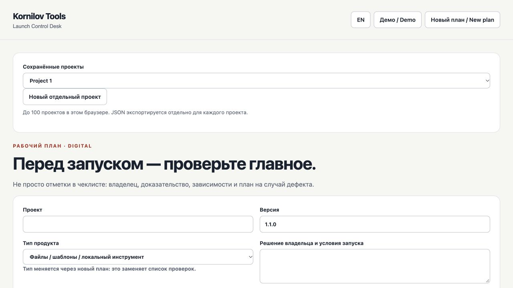

Launch Control Desk
Check the buyer journey before you launch.
Give each launch check an owner, evidence, dependencies and a recorded risk.
The buyer receives the right file
- Owner
- Mira (example)
- Scenario
- Buy → download → open
- Evidence
- Attach the check result
A check needs evidence before it is complete.
Demonstration only. Projects, people and numbers are fictional.
Who it is for
For digital product creators and small teams checking delivery as well as the source code.
What you get
- Up to 100 separate launch plans
- Owners, evidence and dependencies
- Separate blockers and risks
- Worked example and JSON workspace backup

How it works
Paid tools come in a ZIP: extract the folder and open index.html in a desktop browser. There are no dependencies to install and no separate in-tool account. Keep JSON backups of your workspace; the mobile site is primarily for exploring the product.
How you can use it
Personal and commercial use, including internal team work. Share your own documents with colleagues and clients. Reselling the package is not permitted.
Full licenseOne-time purchase and subscriptions
The purchase button opens the specific Boosty post. You can buy this product once. If you already have a qualifying subscription, check access in your account first. Boosty subscriptions are billed separately and may renew; review the selected option before payment.
Support and updates
Need help with the files or the tool? Message the creator on Boosty. Include the product, version and browser. A changelog is included in the ZIP. Future updates and new products are not promised as part of a one-time purchase.